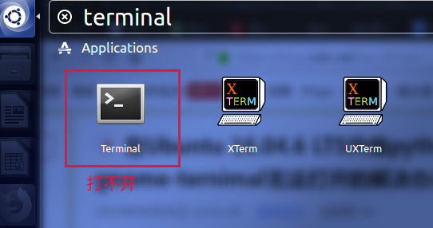

sudo apt-get update
sudo apt-get install python3.7
安装成后的目录在/usr/bin/python3.7，同时将其设置成默认
sudo update-alternatives --install /usr/bin/python3 python3 /usr/bin/python3.7 150
sudo update-alternatives --config python
因为我们已经标记好了。所以这个指令可以切换任意一个版本为默认版本。
将Ubuntu系统自带的python3.6升级到3.7以后，或者自己单独又安装了python3.7版本，使用没问题，但是重启系统后发现,我的终端Terminal打不开了。
快捷键Ctrl+alt+T不行，在Applications里面点击图标也打不开：

具体解决如下：
想办法打开终端能输入命令，有以下方法：
1）在图形化界面的空白处右键，选择“Open Terminal”
2）使用XTerm，就是上面截图中的第二个，如果有安装的话，如果没有去Ubuntu software安装一个就好
3）按Ctrl+Alt+F1从图形界面切换到命令模式，需要输入用户名和密码登录（进去前记住了，按Ctrl+Alt+F7就可以回到图形Ctrl+alt+T界面）
4）输入命令：
$ gnome-terminal
看到报错信息：ImportError: cannot import name ‘_gi’
5）$ cd /usr/lib/python3/dist-packages/gi/
# 将35改成37（我的是python是37，如果你的是36就改成37）
$sudo mv _gi_cairo.cpython-35m-x86_64-linux-gnu.so _gi_cairo.cpython-37m-x86_64-linux-gnu.so
$ sudo mv _gi.cpython-35m-x86_64-linux-gnu.so _gi.cpython-37m-x86_64-linux-gnu.so
修改35->37
4）最后，还要注意一下，你的python3是安装在哪里的：
看看python3装在哪儿
5）上图所示就非默认目录了（默认目录是/usr/bin/）按照python3.7的话，就是非默认目录了，需要执行以下命令，将gi包拷过去：
6）$sudo cp -fr /usr/lib/python3/dist-packages/gi/ /usr/local/lib/python3.7/site-packages/
7）至此，你Ctrl+alt+T一下，试试看，Terminal就能出来了！